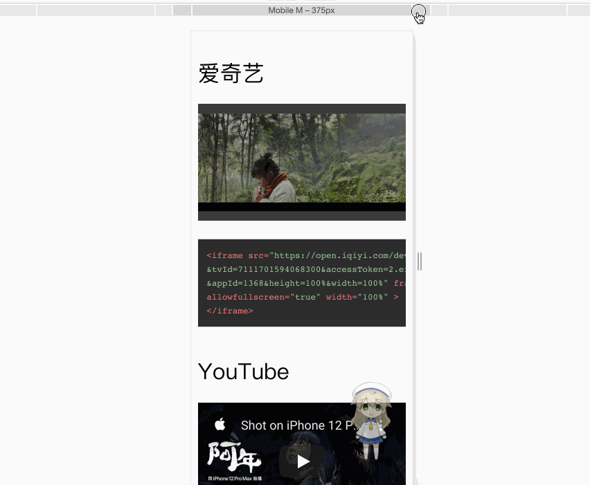

如何让网页嵌入的视频自适应电脑手机屏幕尺寸？
一月 04, 2021
- 1.当你终于按下了分享按钮，找到了网页嵌入视频的代码：
结果它显示一个小视频，没有播放控件，也无法全屏。
1
<iframe src="//player.bilibili.com/player.html?aid=756413860&bvid=BV1Er4y1K7u8&cid=289273275&page=1" scrolling="no" border="0" frameborder="no" framespacing="0" allowfullscreen="true"> </iframe>
2.于是添加width和height属性。
1 | <iframe src="//player.bilibili.com/player.html?aid=756413860&bvid=BV1Er4y1K7u8&cid=289273275&page=1" scrolling="no" border="0" frameborder="no" framespacing="0" allowfullscreen="true" |
在电脑上看正常了，在手机上看是巨大的，视频超出了屏幕范围。
3.网上说width设置100%可使得视频宽度适应屏幕宽度，跟随放大缩小。可是如何使高度跟随宽度变化呢？
1 | <iframe src="//player.bilibili.com/player.html?aid=756413860&bvid=BV1Er4y1K7u8&cid=289273275&page=1" scrolling="no" border="0" frameborder="no" framespacing="0" allowfullscreen="true" |
如果height设为600，在电脑正常了，而在手机……
1 | <iframe src="//player.bilibili.com/player.html?aid=756413860&bvid=BV1Er4y1K7u8&cid=289273275&page=1" scrolling="no" border="0" frameborder="no" framespacing="0" allowfullscreen="true" |
4.如何才能让视频保持长宽比又跟随屏幕宽度缩放呢？

其实只要在外面包裹的容器保持长宽比，然后让视频充满容器就可以啦！这个容器可以是/
.1 | <p class="video"> |
然后全局css添加这几条语句就OK啦！
1 | .video { |
查看评论